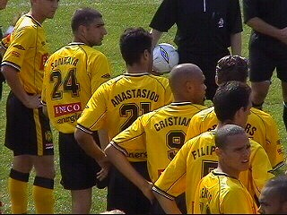
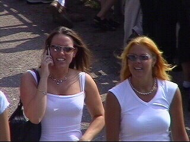

|
Zuidvogels - Roda JC (0-3) 2 augustus 2003 |
Nadat we eerst op het veld van concurrent SVH
belandden vonden we het riante complex van de
gezelligheidsclub, de Zuidvogels.
Het FP was er met 25 man. Hier de altijd vrolijke
Rosj...
...en de altijd goed geluimde Tan!
Zomer in Huizen ;-)
Zomer in Huizen ;-)

Onze strijders.
Een mooi moment voor enig vuurwerk.
Wat thuis niet kan doen we uit (Huizen)....

Zomer in Huizen ;-)
Het prachtige reclamebord van Bert Schaap.

Zomer in Huizen.
Zomer in Huizen ;-)
Herkent u hem? Iceman. Ondanks een gigantisch
duur entreebiljet voor Dance Valley kwam deze
gast naar Roda kijken. Hulde!
Zomer in Huizen ;-)
Zomer in Huizen ;-)
Aan het begin van de tweede helft even clubben
om de cornervlag....
Cristiano benut een penalty.
Zomer in Huizen ;-)
Sonko waarschijnlijk al in augustus speelklaar.
De spelers in de kantine waar het erg gezellig
was. Bier was een euro en de zanger gratis.
Haas op de foto met Ajaxsupporter :-)
De bewaker van de vlag.

En dan opeens.....de ramen worden ingegooid.
Een jammerlijk einde van een heel gezellige dag.
Het reeds aanwezige politieapparaat rukte uit.
Enkele gasten maakten de Rodafans aan het eind
van de wedstrijd uit voor kutmoffen en kanker-
limbo's. Toen men ook nog begon te trekken en
te duwen was het hek van de dam.
Op het slotincident na een zeer geslaagde dag!